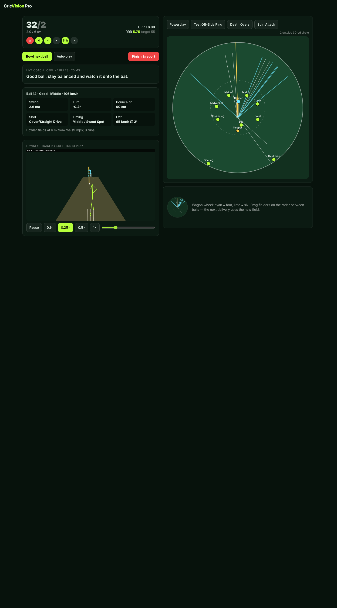
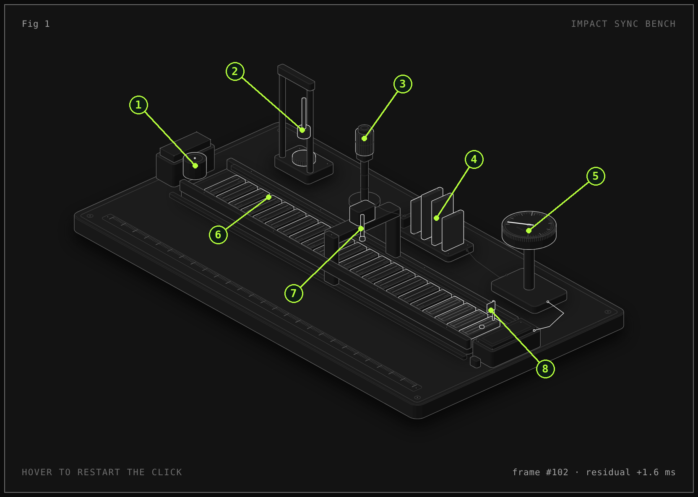

Pick conditions, press Bowl next ball. Every delivery runs through the same physics, MCC rules and coaching code as a live camera session.


MediaPipe finds 33 body joints per frame on-device
Kalman filter + optical flow follow the ball
Physics (drag, Magnus, bounce) fits a flight to the 2D track
MCC: LBW, no-ball, free hit, extras
Gemini live tip in ~1 s; full report at the end
Executive debrief, 3-drill plan, slow-motion reel, wagon wheel, pitch map, beehive, stress curve — saved locally, exportable as JSON/PDF.